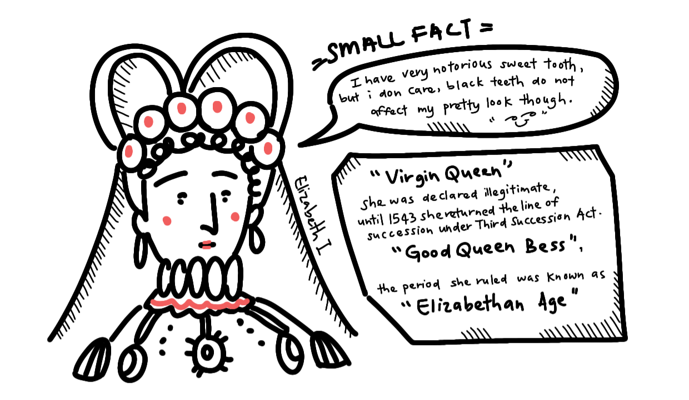
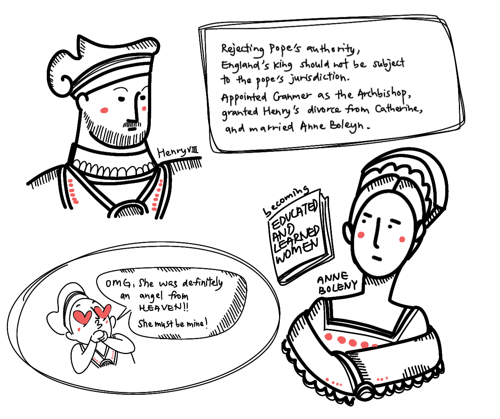

Go to top
Go to topChapter I: THE BEGINNING
Introduction

|
|
| Elizabeth Tudor | |
|---|---|
| Ethnicity | English |
| Nationality | England (The UK was only established in 1707, Ireland joined in 1801) |
| Place of Birth | Greenwich Palace |
| Date of Death | March 24, 1603 |
| Place of Death | Richmond, Surrey |
| Age | 69 years old (1533-1603) |
| Status | Deceased |
| Birthday | 7 September 1533 |
| Height | 162.56 cm (5’ 4”) |
| Weight | Unknown |
| Professional Status | |
| Affiliation | Church of England, England, Ireland, House Tudor |
| Profession | Monarch |
| Position | Queen of England and Ireland |
| Reign | 1558-1603 |
| Partner | William Cecil |
| Base of Operations |
|
Personal Status |
| Relatives |
|
ELIZABETH I, bynames the Virgin Queen and Good Queen Bess, queen of England during a period, better known as the Elizabethan Age. This was a transition to England’s rise to its position as a major European power in politics, commerce, and the arts.
Elizabeth I was the last of five reigning Tudor monarchs, bringing an end to over a century of Tudor rule.She ascended the throne during a time of great division within the nation, brought about by having both Protestant and Catholic monarchs successively. In this trying time, Elizabeth displayed shrewdness, courage, political acumen, helping to bring the country together against foreign adversaries. Her reign is well characterised by its moderate stance and tolerance of various religious sects, quelling the flames that once fiercely burned between Protestants and Catholics. This was in an era when the Monarch held power much beyond that of their modern counterparts, meaning their decisions could directly influence the nation.


Elizabeth I’s contributions are not limited to internal stability, she kept England on cordial terms with other European superpowers. This allowed for further stability as she went about piecing the fractured country from her half-siblings’ tumultuous reign.

Elizabeth I is considered one of Britain’s greatest monarchs for bringing stability to the nation throughout her four decades reign of the country. In her memory, the era during which she reigned and an American colony carry her name. The latter half of the 16th century in England is justly called the Elizabethan Age: rarely has the collective life of a whole era been given so distinctively personal a stamp.

Background
Elizabeth’s story begins far before her birth. The year is 1527, and Henry has a big problem: His first marriage, to Catherine of Aragon, had failed to produce a healthy son and male heir to the throne. There were multiple pregnancies, but most had ended in miscarriages or stillbirths. Their eldest son, Henry, Duke of Cornwall, who had brought great joy to the nation with his birth, tragically died within the subsequent weeks. This left only a single daughter, Mary Tudor who had successfully survived to adulthood.

HENRY AND CATHERINE
The two had been married for almost two decades and gone through six pregnancies. Henry was getting impatient. His infatuation with his wife’s servants almost certainly contributed to his divorce.Henry had become infatuated with one of his wife’s ladies-in-waiting, Anne Boleyn, whose sister Mary had previously been his lover. Anne was no common fool, she was educated in the Netherlands and France, largely as a maid of honour to Queen Claude of France. In addition, she served as a lady-in-waiting to Queen Claude’s daughter’s Mary for a number of years. She was widely considered one of the more learned women of her time. Her education consisted of studying reformist religious ideals, which she must have no doubt embraced. All this, combined with the sophistication gained from serving in a French court, would have no doubt endeared herself to Henry’s VIII wandering mind.

Anne encouraged the king’s attention, but shrewdly refused to become his mistress, setting her sights on a higher goal. She likely indulged in his more tame advances on her while refusing his heavier advances. This only inflamed Henry’s passion, increasing his desire to marry Anne, and perhaps stoking one to divorce Catherine of Aragon.
Henry VIII and Catherine of Aragon were Roman Catholic, and the Church forbade divorce.So Henry asked Pope Clement VII to grant him an annulment— a declaration that the marriage never existed. from Catherine. He argued that the marriage was against God’s will, due to the fact that she had briefly been married to Henry’s late brother, Arthur.
If the marriage never existed, then there could be no divorce, right? Catherine refused to accept this arrangement.
Pope Clement denied an annulment for several reasons, one being that Catherine's nephew, Emperor Charles V of Spain, had laid siege to Rome and essentially was holding the Pope as prisoner. The latter was fiercely loyal to his aunt, and wanted the marriage to continue.

With the papacy almost entirely under the sway of the Spanish Imperial family, Clement VII was not inclined to grant Henry a divorce from the emperor’s aunt. But he didn’t want to completely deny Henry either, so he stretched out negotiations with the king’s minister, Cardinal Thomas Wolsey, over several years, even as Henry grew increasingly frustrated.
It was the clergyman Thomas Cranmer and the king’s influential adviser Thomas Cromwell—both Protestants—who built a convincing case that England’s king should not be subject to the pope’s jurisdiction. Eager to marry Anne, Henry appointed Cranmer as the Archbishop of Canterbury, after which Cranmer quickly granted Henry’s divorce from Catherine.
Henry broke away from the Roman Catholic Church by naming himself the Supreme Head of the Church of England (thereby rejecting the Pope's authority), divorced Catherine, and married Anne Boleyn.

HENRY AND ANNE BOLEYN